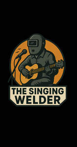

Trade Mark Journal No.2025/042 17 October 2025
UK00004274754 8 October 2025 (25)

Limitations: Logo is not to be used by any third parties without written permission from Ryan Bellerby (brand/ trademark owner)
- Class 25
- Hoodies; Sweatshirts; Hooded sweatshirts; T-shirts; Hooded sweat shirts; Shirts; Short-sleeved T-shirts; Turtleneck shirts; Hooded pullovers; Long-sleeved shirts; Beanies; Short-sleeve shirts; Camouflage shirts; Short-sleeved shirts; Tee-shirts; Fleece jackets; Corduroy shirts; Tracksuits; V-neck sweaters; Collared shirts; Shirts for suits; Sleeved jackets; Jackets [clothing]; Sleeveless jackets; Sweat shirts; Sweaters; Beanie hats; Jackets; Sweatpants; Fleece pullovers; Open-necked shirts; Knit shirts; Men's and women's jackets, coats, trousers, vests; Mock turtleneck shirts; Cardigans; Turtleneck pullovers; Yoga shirts; Denim jackets; Turtleneck sweaters; Snowboard jackets; Balaclavas; Sports shirts; Jerseys [clothing]; Tank-tops; Camouflage jackets; Hoods [clothing]; Jackets being sports clothing; Turtlenecks; Knit jackets; Pullovers; Casual shirts; Dress shirts; Sleeveless pullovers; Parkas; Bandanas; Jackets (Stuff -) [clothing]; Stuff jackets [clothing]; Moisture-wicking sports shirts; Maternity shirts; Sweat jackets; Anoraks [parkas]; Fleece shorts; Jumpers [sweaters]; Quilted jackets [clothing]; Sport shirts; Sleeveless jerseys; Printed t-shirts; Shorts [clothing]; Overshirts; Hooded tops; Fleece vests; Jumpers [pullovers]; Hunting shirts; Polar fleece jackets; Headbands [clothing]; Headbands for clothing; Polo shirts; Trenchcoats; Soccer shirts; Hooded bathrobes; Button-front aloha shirts; Sleep shirts; Tracksuit tops; Gilets; Playsuits [clothing]; Night shirts; Scarves; Sports shirts with short sleeves; Golf shirts; Sheepskin jackets; Capes (clothing); Leggings [trousers]; Blouson jackets; Polo sweaters; Football shirts; Rugby shirts; Jumpsuits; Wristbands [clothing]; Cowls [clothing]; Mock turtleneck sweaters; Woven shirts; Casual jackets; Windcheaters; Sweatsuits; Denims [clothing]; Aloha shirts; Sports jackets; Fur coats and jackets; Fleece tops; Tennis shirts; Fishing shirts; Bandanas [neckerchiefs]; Overcoats; Scarfs; Cashmere scarves; Stuff jackets; Tops [clothing]; Waistcoats [vests]; Hats; Fur jackets; Bandannas; Tracksuit bottoms; Pique shirts; Bomber jackets; Windproof jackets; Ramie shirts; Collars [clothing]; Jeans; Under shirts; Toques [hats]; Blazers; Party hats [clothing]; Mufflers [clothing]; Gloves for apparel; Bottoms [clothing]; Jerseys; Collars for dresses; Wind-resistant jackets; Padded jackets.
Ryan Ricky Bellerby